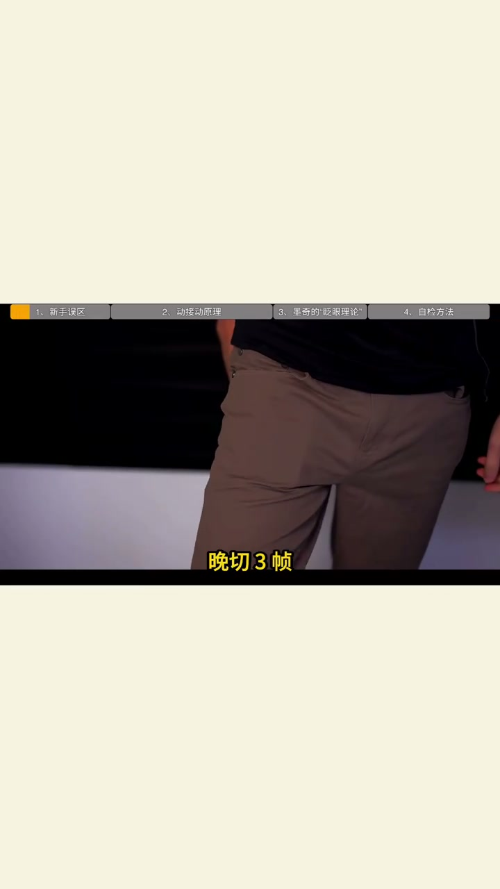
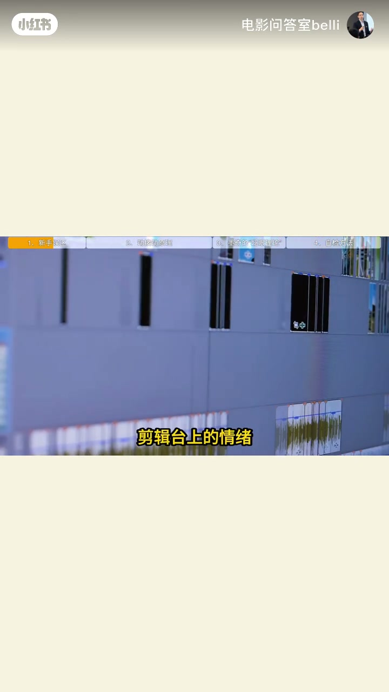
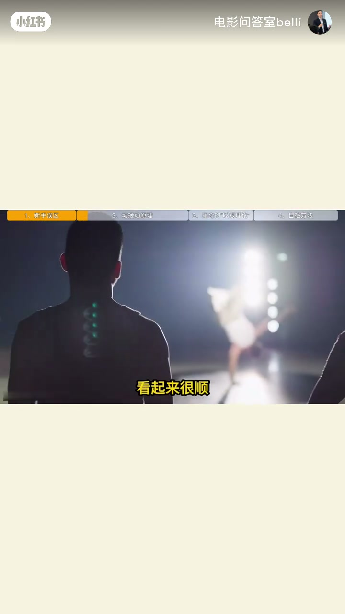
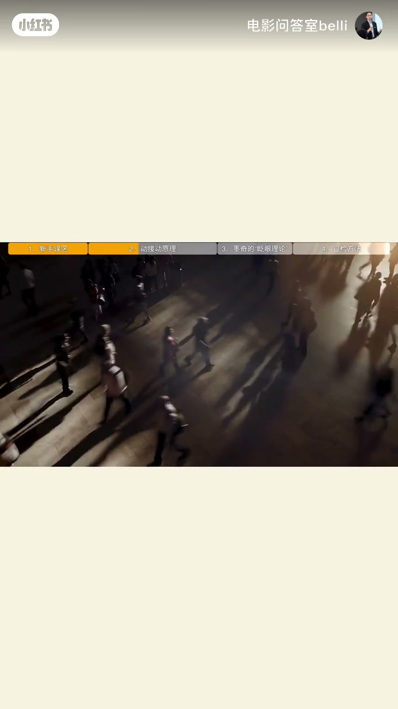
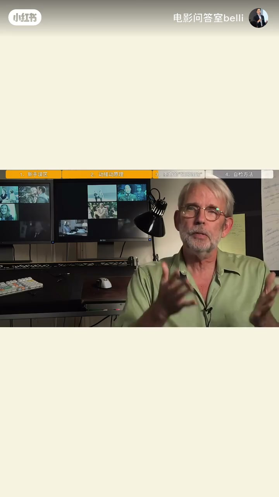
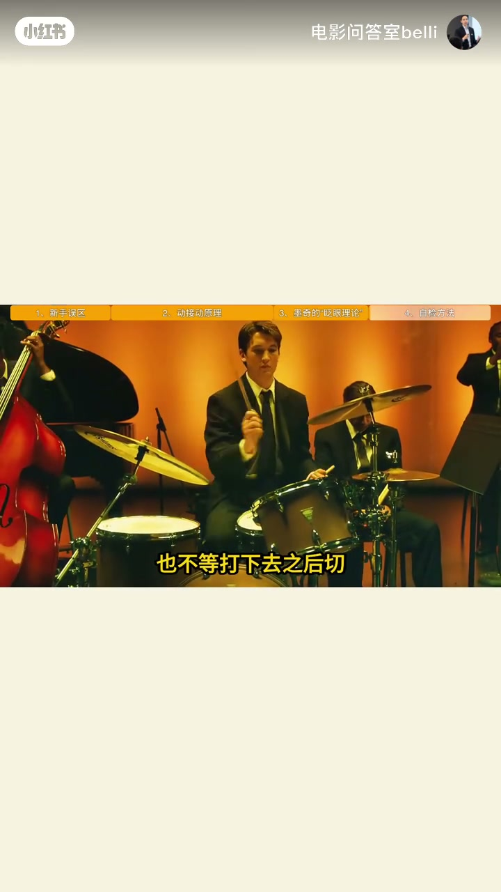
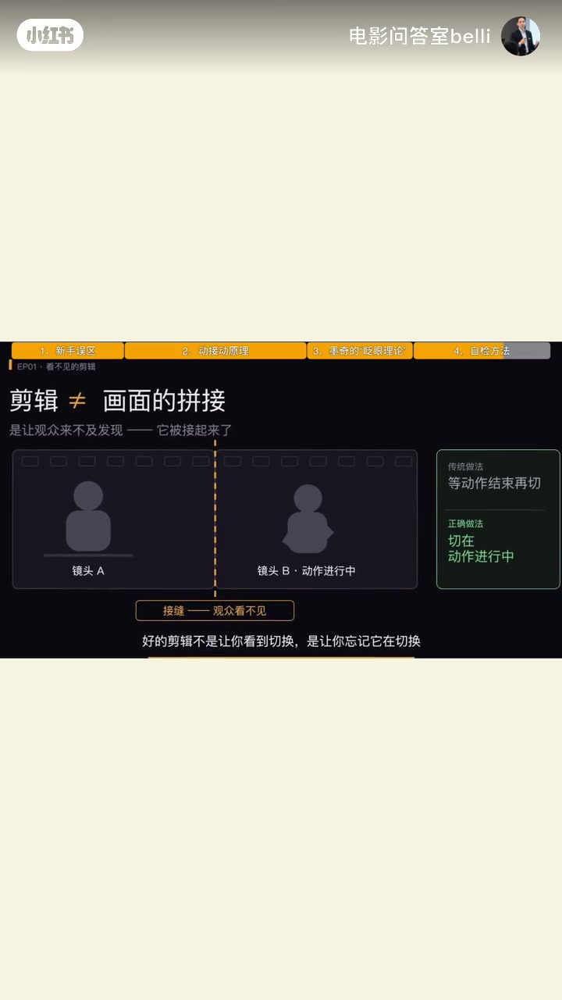

内容要点
「看不见的剪辑」第一集：情绪单位是帧不是秒。新手等站直再切会「顿一下」；正确是在动作1/3–1/2处切，并可卡在眨眼这一天然黑场。
知识结构
同镜头早/晚切三帧：利落vs拖，观众说不出你动了什么。
站直再切→眼睛闲下来→看见换画面。
Cutting on Action：动作1/3–1/2切入；眨眼是天然黑场。
《爆裂鼓手》落棒途中切；剪辑是让人来不及发现被接上。
剪辑不是接画面，是让观众来不及发现被接起来；切点准＞剪得多快。
00:00–00:18早切晚切差三帧
同一个起身镜头，早切三帧觉得利落，晚切三帧觉得拖，观众却说不出你动了什么。系列命题：剪辑台上的情绪单位是帧，不是秒。
「欢迎来到「看不见的剪辑」；情绪单位是帧，不是秒。」


00:18–00:48新手误区：动作结束再切
常见逻辑：人物站起来、站直了，再切下一镜——看起来顺，片子却总「顿一下」。因为动作结束后观众眼睛闲下来，一眼看见「画面变了」；剪辑最怕被看见。


00:48–01:20动接动：切在动作途中
术语 Cutting on Action：不是等做完，而是动作进行到约三分之一到一半就切。沃尔特·默奇的实用答法——看人物眨眼：闭眼是一次天然黑场，切在那一针，观众眼睛正在「重启」，切口被藏进去。
「动接动：在动作进行到三分之一到一半的时候就切。」

01:20–02:02默奇眨眼与鼓手落棒
《爆裂鼓手》剪辑师 Tom Cross：鼓棒不在最高点切，也不等打下去后切，而压在下落那一两帧之间——观众感到自己的体力也被消耗。奥斯卡最佳剪辑靠的是切点准。金句：剪辑不是把两个画面接起来，是让观众来不及发现他被接起来了。预告下一集：对话里 B 的脸其实在 A 说完之前就出现。


完整转录（54段）
Whisper medium · 中文 · 已做术语校正，仍可能有识别误差。
同样一个起身的镜头 早切三针
观众觉得利落 晚切三针
观众觉得拖
但他绝对说不出来 你到底动了什么
欢迎来到 看不见剪辑 第一集
这五集 我只讲一件事
剪辑台上的情绪单位是帧，不是秒
今天讲最基础 也最常被做错的一个
切点 到底该落在哪
很多人剪动作 逻辑是这样的
人物站起来 站直了
切下一个镜头 看起来很顺 对吧
但你注意看 这样剪出来的片子
总有一种 顿一下的感觉 为什么
因为你在动作结束之后才切
观众的眼睛刚好闲下来
眼睛一闲 他就看见了画面变了
这件事本身
而剪辑最怕的 就是被观众看见
那正确的做法是什么
有个术语叫 Cutting on Action
动接动 不是等动作做完
而是在动作进行到三分之一到一半的时候 就切
那具体切在哪一针呢
沃尔特·默奇 剪《 现代启示录
那位 在眨眼之间
你给过一个很实用的答案
看人物眨眼
为什么看眨眼
因为眨眼本身就是一次闭眼
是一次天然的黑场
切在那一针上
观众的眼睛正在重启
切口就藏进去了
这不是玄学 是他真的这么干
再看爆裂鼓手
剪辑师Tom Cross怎么剪 打鼓
鼓棒抬到最高点
他不在最高点切
也不能打下去之后切
他压在鼓棒往下落的那一两针之间切
结果是什么
观众感受到的不是我在看一个人打鼓
而是我自己的体力也在被消耗
那部片子拿了奥斯卡最佳剪辑
靠的不是剪得多快
是切点准
所以记住一句
剪辑不是把两个画面接起来
是让观众来不及发现他被接起来了
下一集我讲个更反直觉的
专业剪辑里的对话
B的脸
其实在A说完之前就出现了